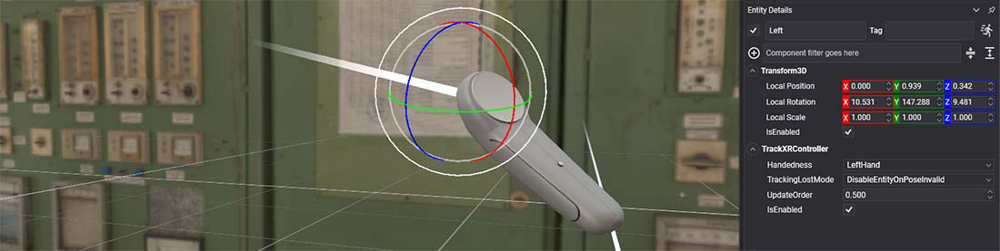
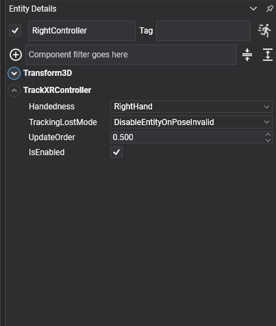

TrackXRController

TrackXRController makes an entity follow a left or right motion controller, such as the Meta Quest Touch controllers, the Pico controllers, the Vive wands or the Valve Index controllers, and exposes the state of its trigger, grip, thumbstick and buttons.
Use it for anything held in the hand: a rendered controller, a tool, a laser pointer, or a behavior that reacts to the buttons.
Properties
When you add the component to an entity in Evergine Studio, it shows these properties:

| Property | Default | Description |
|---|---|---|
| Handedness | LeftHand |
The controller to track: LeftHand or RightHand. |
| TrackingLostMode | DisableEntityOnPoseInvalid |
What happens to the entity when tracking fails. See common properties. |
| ControllerState | Read-only | The input state of this frame, as an XRControllerGenericState. |
The component also has the members every tracking component shares, listed in common properties: IsConnected, PoseIsValid, Pose, Pointer, Velocity, AngularVelocity, TrackedDevice and the OnTrackedDeviceChanged event.
Note
On OpenXR a controller only connects when one of the interaction profiles registered in the launcher matches it. If IsConnected stays false with the controller in your hand, add its profile.
Controller state
ControllerState is an XRControllerGenericState structure:
| Field | Type | Description |
|---|---|---|
| IsConnected | bool |
Whether the controller is connected. |
| Trigger | float |
Analog value of the trigger, from 0 (released) to 1 (fully pressed). |
| TriggerButton | ButtonState |
The trigger as a button. |
| Grip | ButtonState |
The grip (squeeze) button. |
| ThumbStick | Vector2 |
Position of the thumbstick, from -1 to 1 on each axis. On Vive wands, the touchpad. |
| ThumbStickButton | ButtonState |
Thumbstick click. |
| Menu | ButtonState |
The menu button. On Meta Touch controllers, only the left controller has one. |
| Button1 | ButtonState |
The first face button: A on the right controller, X on the left. |
| Button2 | ButtonState |
The second face button: B on the right controller, Y on the left. Not mapped on OpenVR. |
| Touchpad | Vector2 |
Declared for touchpad controllers. No platform in this release fills it: touchpads report through ThumbStick. |
A ButtonState goes through four values: Released, then Pressing for exactly one frame, then Pressed while held, then Releasing for one frame. Compare with Pressing to react once per press. The structure also has two helpers:
| Method | Returns |
|---|---|
IsButtonPressed(XRButtons button) |
true while the button is Pressed, that is held, from the second frame on. It is false on the Pressing frame. |
IsButtonReleased(XRButtons button) |
!IsButtonPressed(button). |
XRButtons has the values ThumbStick, Trigger, Menu, Grip, Button1 and Button2.
Using TrackXRController
Create a tracked controller from code
This scene puts a teapot in the left hand and scales it with the trigger:
using System;
using Evergine.Components.Graphics3D;
using Evergine.Components.XR;
using Evergine.Framework;
using Evergine.Framework.Graphics;
using Evergine.Framework.XR;
using Evergine.Mathematics;
public class ControllerScene : Scene
{
protected override void CreateScene()
{
base.CreateScene();
var material = this.Managers.AssetSceneManager.Load<Material>(DefaultResourcesIDs.DefaultMaterialID);
// A teapot that follows the left controller.
var leftController = new Entity("LeftController")
.AddComponent(new Transform3D())
.AddComponent(new MaterialComponent() { Material = material })
.AddComponent(new TeapotMesh() { Size = 0.15f })
.AddComponent(new MeshRenderer())
.AddComponent(new TrackXRController()
{
Handedness = XRHandedness.LeftHand,
})
.AddComponent(new ScaleWithTrigger());
this.Managers.EntityManager.Add(leftController);
}
}
public class ScaleWithTrigger : Behavior
{
[BindComponent]
private Transform3D transform = null;
[BindComponent]
private TrackXRController controller = null;
protected override void Update(TimeSpan gameTime)
{
if (!this.controller.IsConnected)
{
return;
}
// Trigger is an analog value from 0 to 1, so the teapot grows from 1x to 2x.
this.transform.LocalScale = Vector3.One * (1 + this.controller.ControllerState.Trigger);
}
}
React to buttons and draw a pointer
This behavior hides the entity's mesh with a press of the first face button, and draws the controller's pointer ray while the grip is held:
using System;
using Evergine.Common.Graphics;
using Evergine.Common.Input;
using Evergine.Components.Graphics3D;
using Evergine.Components.XR;
using Evergine.Framework;
using Evergine.Framework.Managers;
using Evergine.Framework.XR;
public class ControllerButtons : Behavior
{
[BindComponent]
private TrackXRController controller = null;
[BindComponent]
private MeshRenderer meshRenderer = null;
protected override void Update(TimeSpan gameTime)
{
var state = this.controller.ControllerState;
// Pressing lasts exactly one frame, so this toggles once per press.
if (state.Button1 == ButtonState.Pressing)
{
this.meshRenderer.IsEnabled = !this.meshRenderer.IsEnabled;
}
// IsButtonPressed is true while the button is held.
if (state.IsButtonPressed(XRButtons.Grip))
{
// Pointer is already in world space: draw two metres of it.
var pointer = this.controller.Pointer;
var lineBatch = ((RenderManager)this.Managers.RenderManager).LineBatch3D;
lineBatch.DrawLine(pointer.Position, pointer.GetPoint(2), Color.Yellow);
}
}
}
Know when the device changes
OnTrackedDeviceChanged fires when the component picks up a different device. It is the place to reset anything tied to the previous one:
using System.Diagnostics;
using Evergine.Components.XR;
using Evergine.Framework;
using Evergine.Framework.XR.TrackedDevices;
public class ControllerWatcher : Component
{
[BindComponent]
private TrackXRController controller = null;
protected override bool OnAttached()
{
this.controller.OnTrackedDeviceChanged += this.OnDeviceChanged;
return base.OnAttached();
}
protected override void OnDetached()
{
this.controller.OnTrackedDeviceChanged -= this.OnDeviceChanged;
base.OnDetached();
}
private void OnDeviceChanged(object sender, XRTrackedDevice device)
{
Trace.TraceInformation($"Now tracking {device?.Name ?? "no device"}");
}
}
See also
- TrackXRArticulatedHand: tracking hands, and rendering device models with
XRDeviceRenderableModel. - Button states: the same
ButtonStatevalues used by keyboard, mouse and gamepad input.